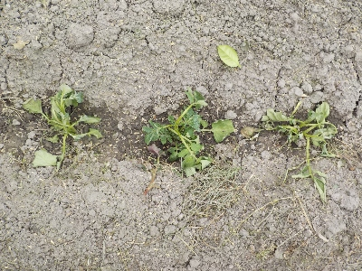
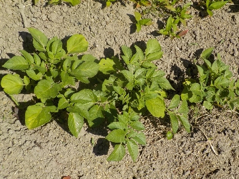
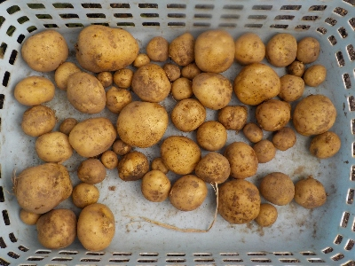

間引いたジャガイモを植えました。
更新日 : 2024/05/05

ジャガイモの芽かきをしました。
根っこ付きで抜けた芽を捨てるのはもったいないと思い、土に植えました。
今からだと大きい芋は採れないかもしれないけど、小さいのが沢山採れたらいいかな。
更新日 : 2024/05/05

ジャガイモの芽かきをしました。
根っこ付きで抜けた芽を捨てるのはもったいないと思い、土に植えました。
今からだと大きい芋は採れないかもしれないけど、小さいのが沢山採れたらいいかな。
更新日 : 2024/05/25

もともと根っこがあったからか、1本も枯れませんでした。
あとはどんだけ収穫できるかですね。
今日は土をちょっと寄せました。
更新日 : 2024/06/22

芽かきしたものを植えて育てたジャガイモを収穫しました。ちょっと小さいけど、十分食べれる大きさでした。
コロコロしててとっても美味しそうです。こんなに良くできるんなら、もっとたくさん植えればよかったかな。
芽かきしたジャガイモの苗を捨てるのはもったいないよ。